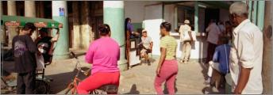
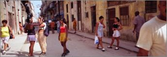
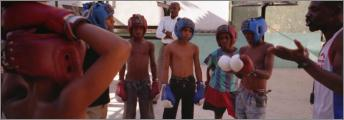
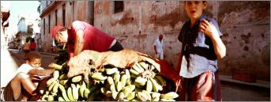
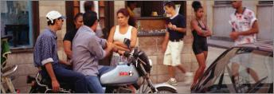
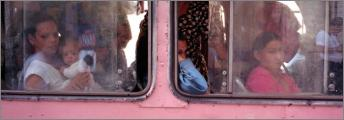
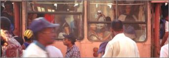

%1
This photograph of elementary students playing around in old Habana Vieja was taken on my second day in Cuba. I found that elementary school students very much enjoyed having their photograph taken. Once they put on the yellow uniforms of middle school, trying to photograph them was like trying to herd cats. Click image to enlarge. |
|||
This photograph of a shoe shine man in old Havana was taken on my first visit to Cuba. This was a very busy corner and I often returned to photograph the action on this corner. However the shoe shine man was never there again. Maybe he moved away or died, but I like to think he was told to get another job, as being a shoe shine man was not a very "revolutionary" kind of job to be pursuing in Cuba. Click image to enlarge. |
|||
There are several ways to capture the action on the street. The first is to wait at a particular place to see what happens, or you can walk along the streets finding the image. In this case I was walking down this street in old Havana when I saw the five girls in the center of the photograph stop and break up into the two pairs and the single girl in the middle. I then stopped to see what would happen. The man in the white shirt kept walking and the woman on the left filled the frame on that side, this creating a full frame with action from edge to edge. Click image to enlarge. |
|||
Cuba is know for producing Olympic gold medalists in boxing, so many young boys attend these informal boxing schools. This school is located in old Havana, and the beauty of this photograph is the framing produced by the boy's arms on the left and the instructor's outstretched arm on the right, along with the man in the back center who adds to the depth of the image. Click image to enlarge. |
|||
This photograph of a mother and daughter was taken early in my first visit to Cuba. This school is located in old Havana and the two girls in the center are standing on a step leading into the school. As I was going back to Cuba a few months after this photo was taken, I took several prints of several images in order to try to give them to the people in the photographs. I went to this school to give the photos to the two girls in the center of the photo, and when I gave a print to the blond school child on the right, she asked me if she could have a copy for her mother. Click image to enlarge. |
|||
The light on the streets of Havana has a magical quality, even more so in the late afternoon, as in this photograph. These two boys have helped the cigar smoking man to bring the bananas out of a building and are preparing to move them on this cart to another location. The raking light creates the strong shadow on the boys shirt and lights up one side of the street while lightening the shadows on the far side of the street. Click image to enlarge. |
|||
Calle Obispo is one of the main streets in Habana Vieja, on which many stores dealing in convertible peso are located. There is much action on that street as can be seen in this panoramic photograph taken on my first visit to Cuba. Click image to enlarge. |
|||
Camel buses, known for their shape used to be a fixture in Havana, Cuba, where they were the main means of bringing workers into the city. They were not real buses, but were converted tractor trailers. They were overcrowded and very hot. This panoramic picture is effective as each woman is lost in their own thoughts and alone on this crowded bus. Also interesting is the interplay of the people behind the glass and the people behind me reflected in the same glass. This picture was taken in 2000, and on my last visit in 2002 they were being replaced by real buses. Click image to enlarge. |
|||
This photograph was taken in Vieja Havana, Cuba, along the Paseo di Marti. These camel buses are used to bring people in from the outskirts to work in Havana. They are notorious for their crowded conditions. This photograph was taken in 2001, and Raul Castro issued a decree in 2008 to finally take these buses off the street. Click image to enlarge. |
|||
This photograph was taken in centro Havana, Cuba with a Hasselblad X-pan. This couple was oblivious to the couples walking nearby. The year this photograph was made, spandex was a hot item for women in Cuba. Click image to enlarge. |
|||